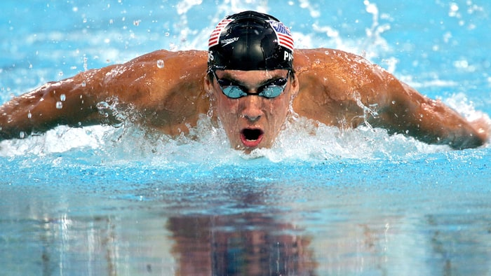

Michael Phelps

Michael Fred Phelps is an American retired competitive swimmer and the most successful and most decorated Olympian of all time, with a total of 28 medals. Phelps also holds the all-time records for Olympic gold medals (23), Olympic gold medals in individual events (13), and Olympic medals in individual events (16). When he won eight gold medals at the 2008 Beijing Games, Phelps broke fellow American swimmer Mark Spitz's 1972 record of seven first-place finishes at any single Olympic Games.
Wikipedia